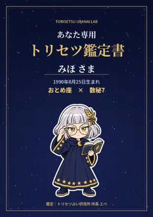
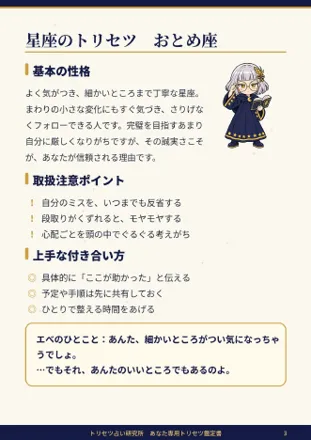
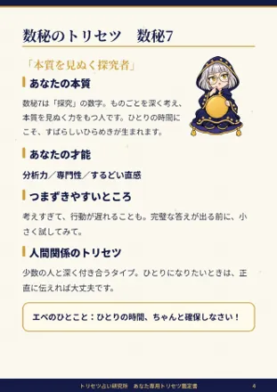
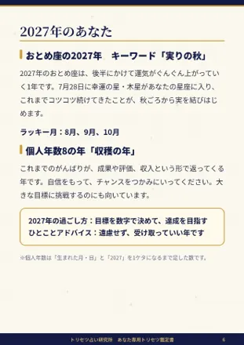

あなただけの取扱説明書
あなた専用トリセツ鑑定書
星座と数秘術、そして心理学の考え方を組み合わせて、
あなたの性格や強み、「こう扱えばうまくいく」というコツを
PDFにまとめてお届けします。




※見本です（1990年8月25日生まれ・みほさんの場合）
わかること
- 基本の性格と、あなたの強み
- 取扱注意ポイント（「こう扱えばうまくいく」という説明書き）
- まわりの人との上手な付き合い方
- 数秘術でわかる、本質・才能・つまずきやすいところ
- 星座×数秘の組み合わせで見る「最強の武器」
- 恋愛と仕事のトリセツ
- 2027年のあなたの運勢と過ごし方
ページ構成（PDF・全7ページ）
- 表紙（お名前・生年月日入り）
- はじめに／あなたの鑑定結果
- 星座のトリセツ
- 数秘のトリセツ
- 組み合わせで読むあなた（恋愛・仕事）
- 2027年のあなた
- エベからの手紙
価格
1,980円980円
先着10名さまのモニター価格です
お申し込みの流れ
- noteの申込記事を購入する
- 購入後に表示される「合言葉」と、お名前・生年月日をインスタのDMで送る
- 3日以内に、鑑定書のダウンロードリンクをDMでお届け
所長エベより
あんたのトリセツ、しっかり読みあげてあげるわよ。楽しみに待ってなさい！
※占いはエンタメとしてお楽しみください／※AIを活用して制作しています